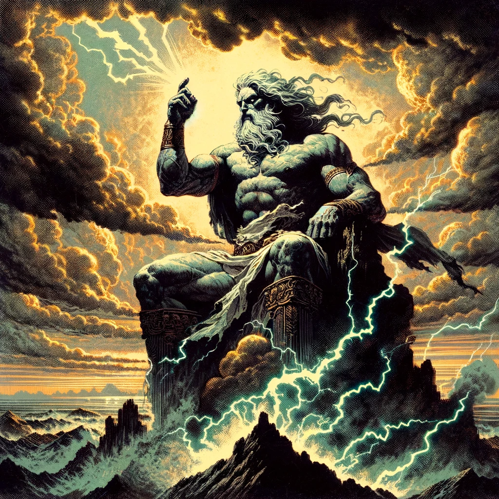
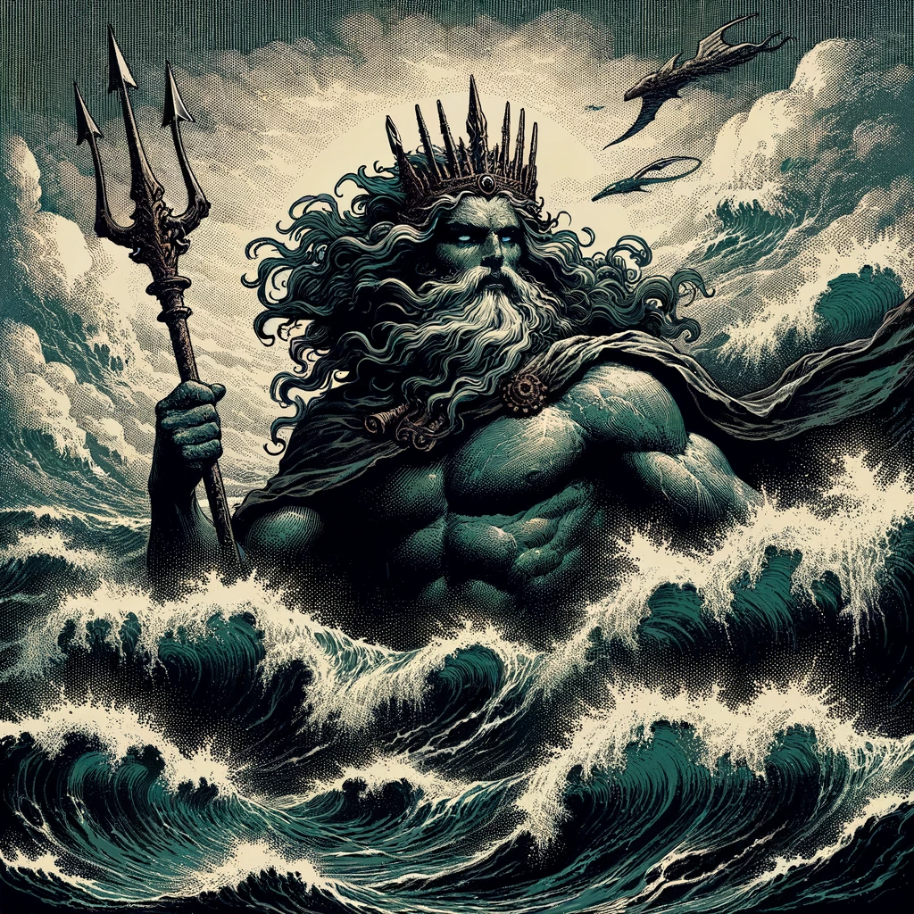
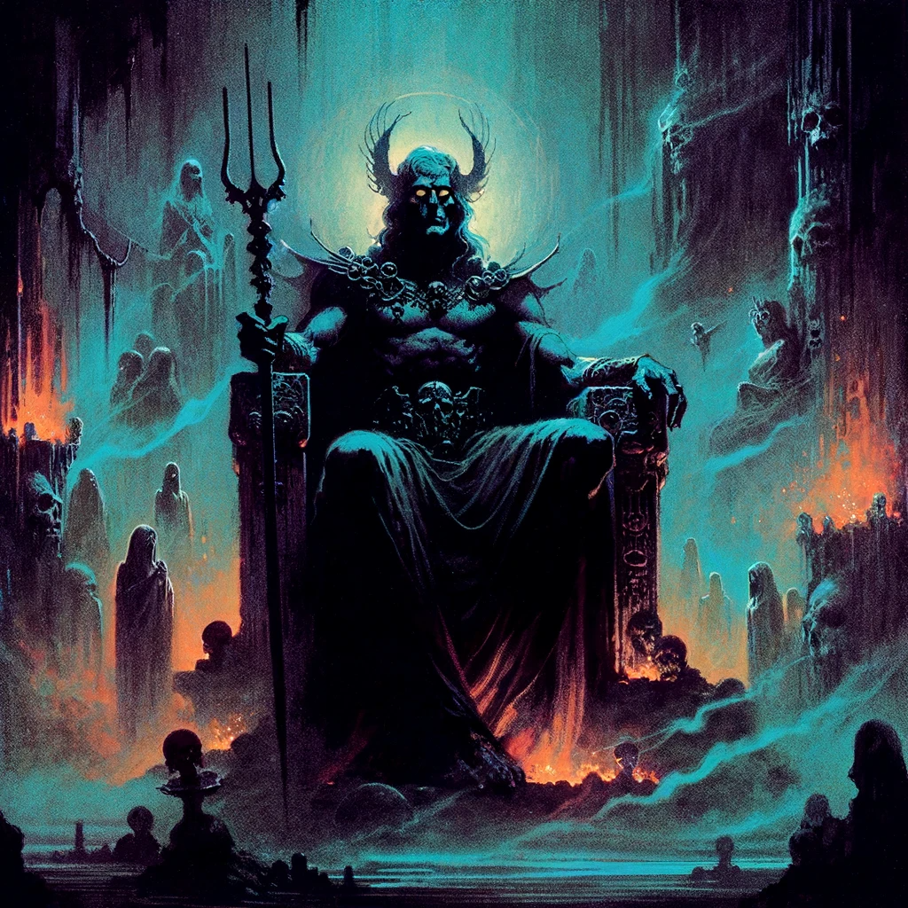
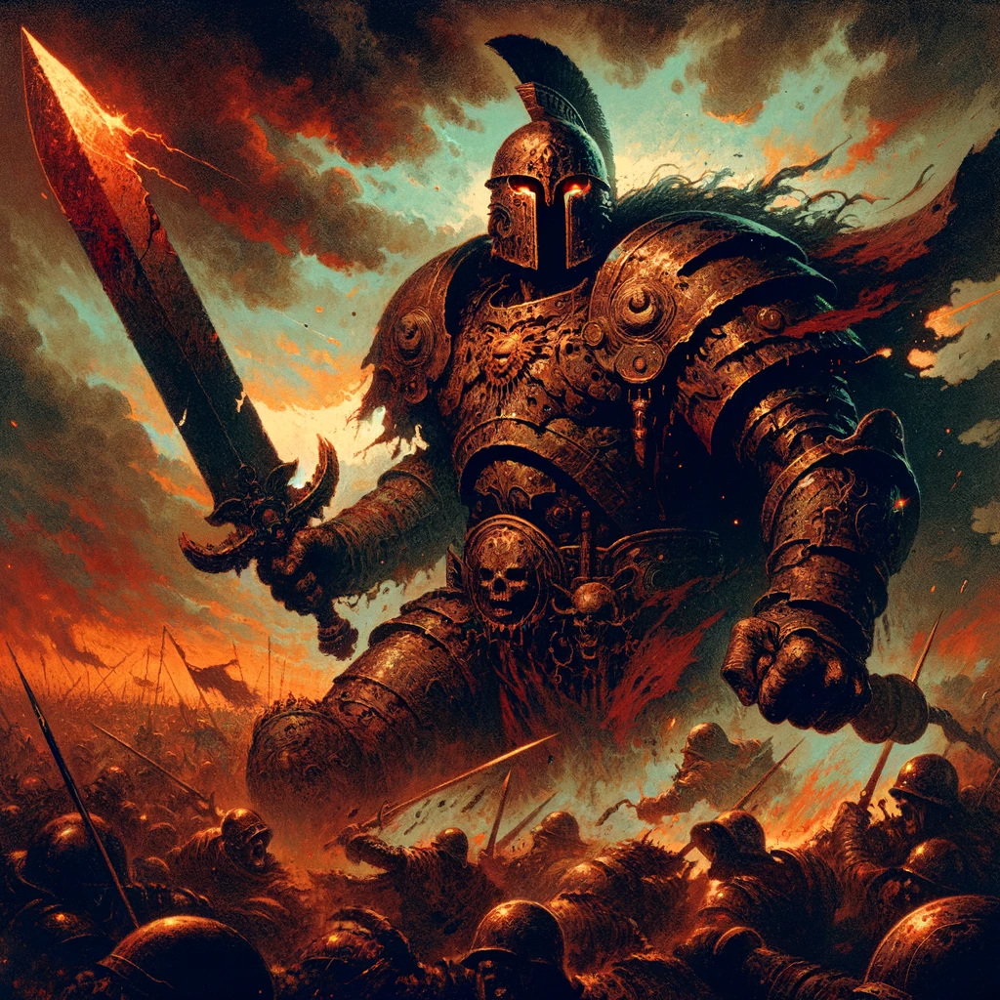
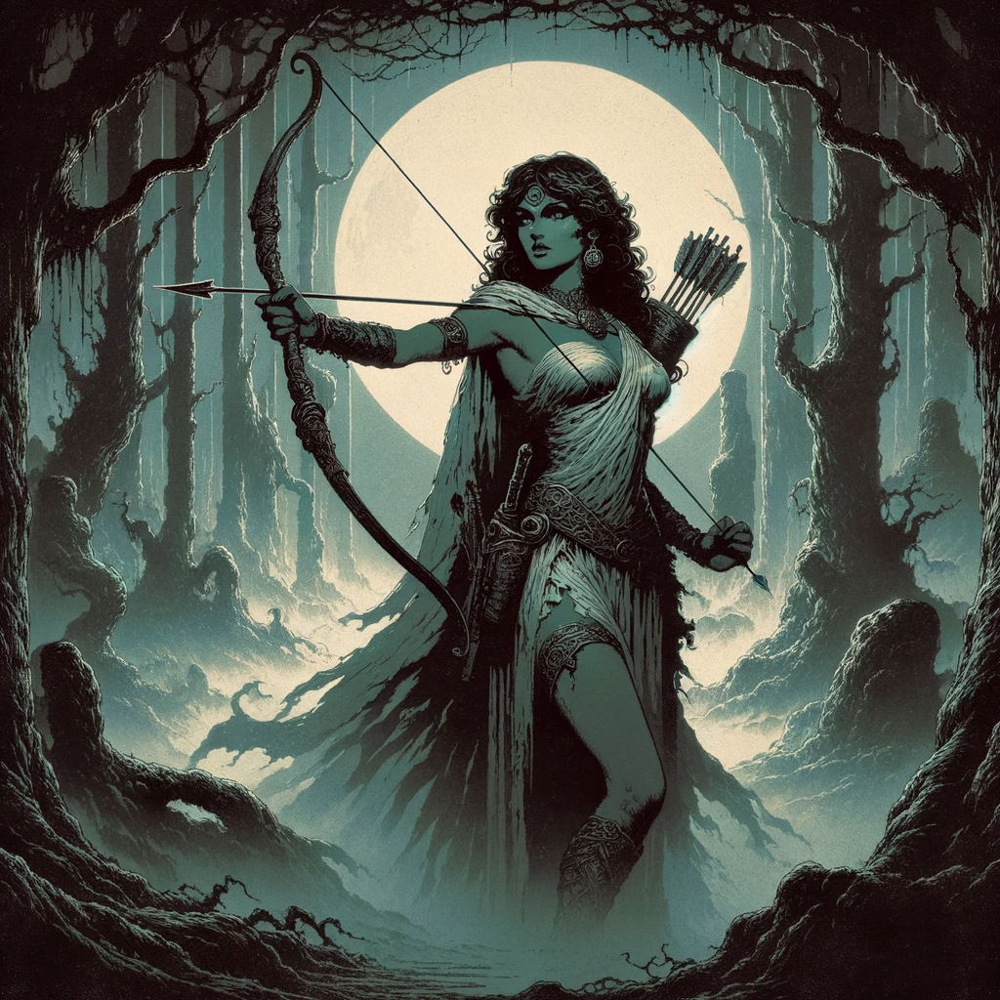
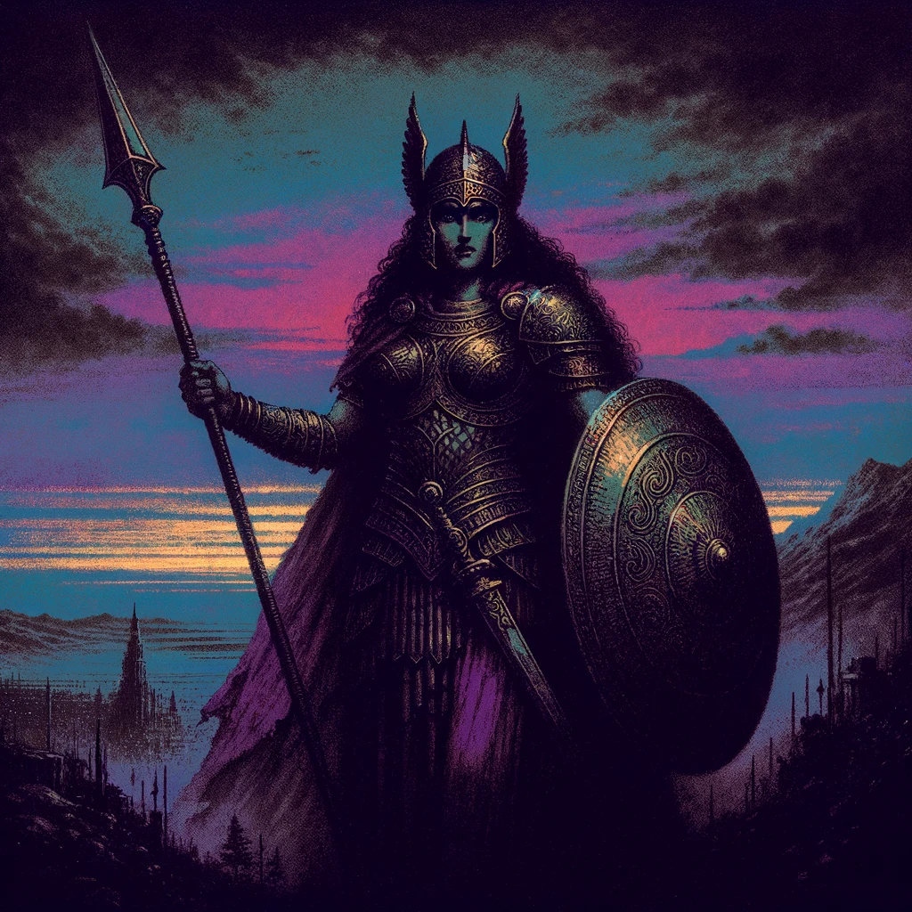
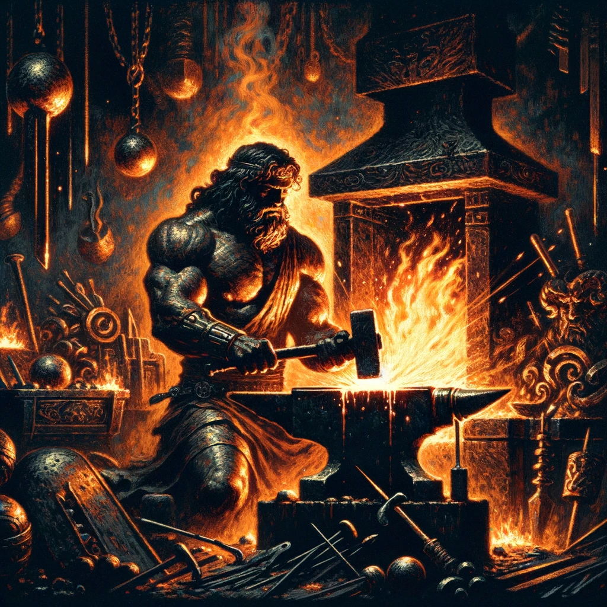
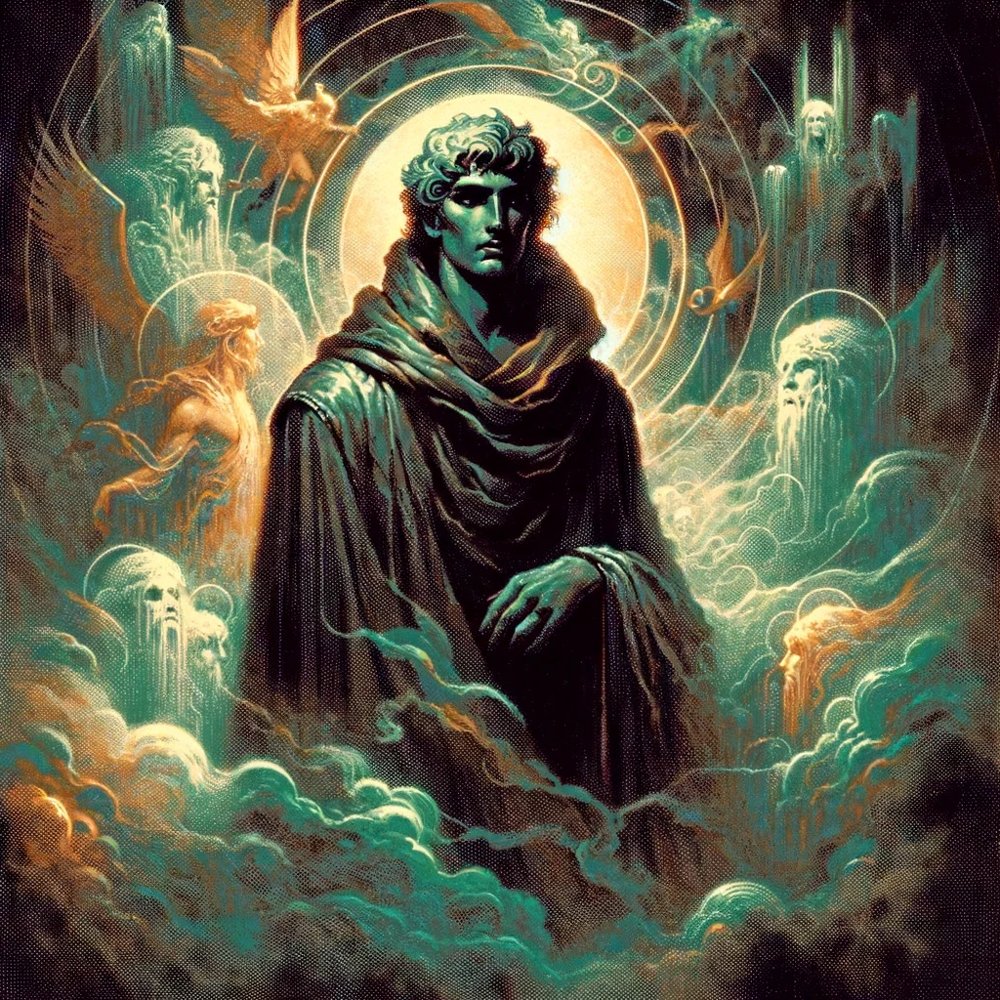
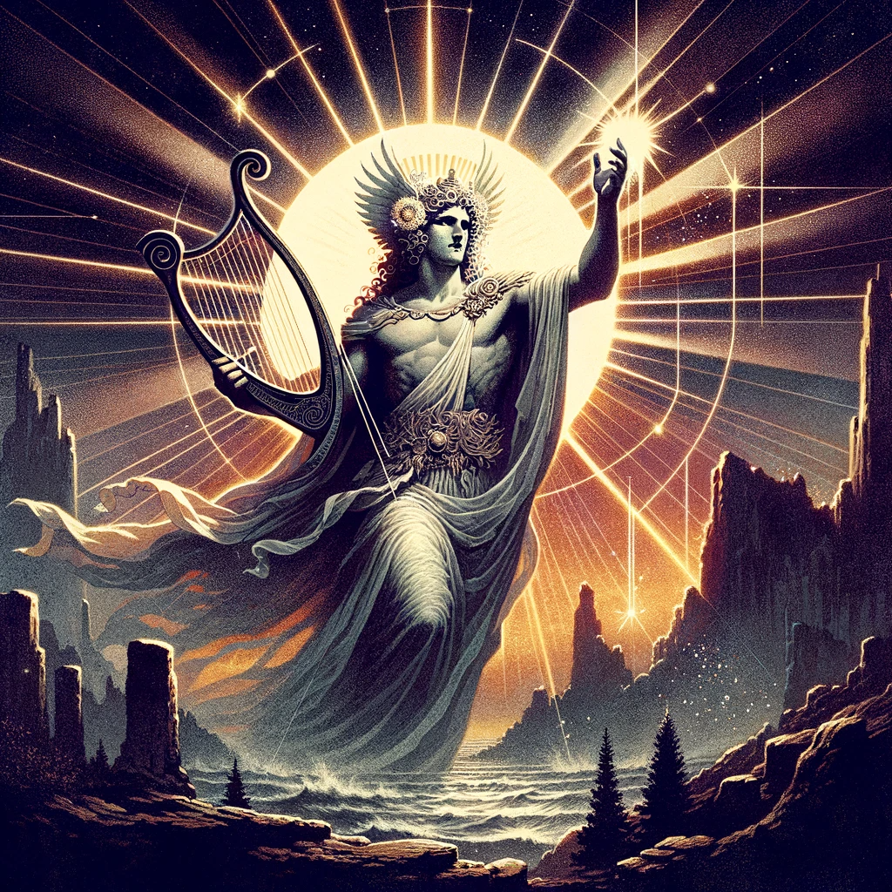

Zeus

God of Gods
Poseidon

God of the Sea
Hades

God of the Underworld
Ares

God of War
Artemis

Goddess of the Hunt
Athena

Goddess of Wisdom
Hephaestus

God of the Forge
Dolos

God of Illusion
Apollo

God of Light
Worship
Through worship, a mortal can gain divine abilities in which will assist them throughout their journeys across Gaia. These traits need to be earned though, whether it be through a good deed or an unjust action.